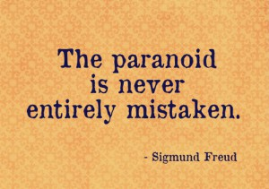

<?xml version="1.0" encoding="UTF-8"?>
<rss version="2.0"
	xmlns:content="http://purl.org/rss/1.0/modules/content/"
	xmlns:wfw="http://wellformedweb.org/CommentAPI/"
	xmlns:dc="http://purl.org/dc/elements/1.1/"
	xmlns:atom="http://www.w3.org/2005/Atom"
	xmlns:sy="http://purl.org/rss/1.0/modules/syndication/"
	xmlns:slash="http://purl.org/rss/1.0/modules/slash/"
	>

<channel>
	<title>The Civilization Gene &#187; subconscious</title>
	<atom:link href="http://civgene.matthewnewhall.com/archives/category/empaths/metamind/subconscious/feed" rel="self" type="application/rss+xml" />
	<link>http://civgene.matthewnewhall.com</link>
	<description>Civilization is the Logic of Compassion</description>
	<lastBuildDate>Fri, 27 Nov 2015 07:34:56 +0000</lastBuildDate>
	<language>en-US</language>
	<sy:updatePeriod>hourly</sy:updatePeriod>
	<sy:updateFrequency>1</sy:updateFrequency>
	<generator>http://wordpress.org/?v=3.6.1</generator>
		<item>
		<title>Science behind civgene:  The puzzle box</title>
		<link>http://civgene.matthewnewhall.com/archives/1098</link>
		<comments>http://civgene.matthewnewhall.com/archives/1098#comments</comments>
		<pubDate>Mon, 23 Nov 2015 19:45:02 +0000</pubDate>
		<dc:creator>Matthew Newhall</dc:creator>
				<category><![CDATA[childhood]]></category>
		<category><![CDATA[civilization gene]]></category>
		<category><![CDATA[conscience]]></category>
		<category><![CDATA[EMPATHS]]></category>
		<category><![CDATA[genetics]]></category>
		<category><![CDATA[intelligence]]></category>
		<category><![CDATA[jealousy]]></category>
		<category><![CDATA[metamind]]></category>
		<category><![CDATA[pack gene]]></category>
		<category><![CDATA[PSYCHOLOGY]]></category>
		<category><![CDATA[PSYCHOPATHS]]></category>
		<category><![CDATA[science]]></category>
		<category><![CDATA[study]]></category>
		<category><![CDATA[subconscious]]></category>
		<category><![CDATA[sympathy]]></category>
		<category><![CDATA[trust]]></category>

		<guid isPermaLink="false">http://civgene.matthewnewhall.com/?p=1098</guid>
		<description><![CDATA[&#160; Responding to some rather silly accusations that I just made civgene up.   This was always intended as a destination in hard science, at the least.   First the septic may want to look at the paper on falsification.   And then go on to answer why civgene is not just &#8216;the pack gene&#8217; plus intelligence. [&#8230;]]]></description>
				<content:encoded><![CDATA[<div class="simplesocialbuttons">
<div class="simplesocialbutton ssb-button-googleplus"><!-- Google Plus One--><div class="g-plusone" data-size="medium" data-href="http://civgene.matthewnewhall.com/archives/1098"></div></div>
<div class="simplesocialbutton ssb-button-fblike"><!-- Facebook like--><div id="fb-root"></div><div class="fb-like" data-href="http://civgene.matthewnewhall.com/archives/1098" data-send="false" data-layout="button_count" data-show-faces="false"></div></div>
<div class="simplesocialbutton ssb-button-twitter"><!-- Twitter--><a href="https://twitter.com/share" class="twitter-share-button" data-text="Science behind civgene:  The puzzle box" data-url="http://civgene.matthewnewhall.com/archives/1098" rel="nofollow"></a></div>
</div>
<p>&nbsp;</p>
<p>Responding to some rather silly accusations that I just made civgene up.   This was always intended as a destination in hard science, at the least.   First the septic may want to look at the <a title="http://www.civgene.matthewnewhall.com/papers/Civgene-falsifiability.html" href="http://www.civgene.matthewnewhall.com/papers/Civgene-falsifiability.html">paper on falsification</a>.   And then go on to answer why civgene is <a href="http://civgene.matthewnewhall.com/index.html%3Fp=896.html">not just &#8216;the pack gene&#8217; plus intelligence.</a></p>
<p>Now for a behavior feather in the cap of civgene. Imagination vs visualization.  You many want to see some earlier <a title="http://civgene.matthewnewhall.com/archives/745" href="http://civgene.matthewnewhall.com/index.html%3Fp=745.html">psychopath/animal vs empath comparisons here</a>.</p>
<p>Humans know humans can be trusted.  Humans know visible appearance (the primary sense) can differ from attributes. The foundation of imagination.</p>
<p>Website.</p>
<p><a href="http://www.pbs.org/wnet/humanspark/lessons/experimenting-with-experiments/video-segments/?p=432">http://www.pbs.org/wnet/humanspark/lessons/experimenting-with-experiments/video-segments/?p=432</a></p>
<p>Direct to movie.<br />
<a href="http://www-tc.pbs.org/wnet/wp-content/blogs.dir/7/files/2010/12/Humans-vs.-Chimps_RE-DO1.mov">http://www-tc.pbs.org/wnet/wp-content/blogs.dir/7/files/2010/12/Humans-vs.-Chimps_RE-DO1.mov</a></p>
<p>Autoplay is off on the movie below. Usually you click or tap and try space bar. It&#8217;s a little over 3 minutes long.</p>
<p><object width="512" height="288" classid="clsid:02bf25d5-8c17-4b23-bc80-d3488abddc6b" codebase="http://www.apple.com/qtactivex/qtplugin.cab#version=6,0,2,0"><param name="src" value="http://www-tc.pbs.org/wnet/wp-content/blogs.dir/7/files/2010/12/Humans-vs.-Chimps_RE-DO1.mov" /><param name="autoplay" value="false" /><param name="pluginspage" value="http://www.apple.com/quicktime/download/" /><embed width="512" height="288" type="video/quicktime" src="http://www-tc.pbs.org/wnet/wp-content/blogs.dir/7/files/2010/12/Humans-vs.-Chimps_RE-DO1.mov" autoplay="false" pluginspage="http://www.apple.com/quicktime/download/" /></object></p>
<p>The key here is the failure of the primates to recognize either that a human pointing was an attempt to assist or that the identically sized boxes are actually different weights.</p>
<p>Now for one of the original foundations of civgene.  The puzzle box experiment.  Please fast forward to 41:30.  I have not preset the video to that for you because the whole thing is worth watching, but the last 20 minutes are key. If it&#8217;s taken down it&#8217;s a Nova called &#8216;Ape Genius&#8217; if it&#8217;s ever taken down.</p>
<p><iframe width="625" height="352" src="https://www.youtube.com/embed/SFGTHtrhtfg?feature=oembed" frameborder="0" allowfullscreen></iframe></p>
<p>There are three testable differences that separate humans from apes.<br />
1. Apes have vastly superior visual memories.<br />
2. Humans quickly reconcile that an object may not be as it visually appears.<br />
3. Apes won&#8217;t suspend their own observations when taught by demonstration.</p>
<p>Evolution favors imagination over imitation.</p>
]]></content:encoded>
			<wfw:commentRss>http://civgene.matthewnewhall.com/archives/1098/feed</wfw:commentRss>
		<slash:comments>0</slash:comments>
		</item>
		<item>
		<title>Are contagious yawns connected to empathy?</title>
		<link>http://civgene.matthewnewhall.com/archives/1032</link>
		<comments>http://civgene.matthewnewhall.com/archives/1032#comments</comments>
		<pubDate>Tue, 25 Aug 2015 13:04:32 +0000</pubDate>
		<dc:creator>Matthew Newhall</dc:creator>
				<category><![CDATA[defense against a psychopath]]></category>
		<category><![CDATA[defense against psychopaths]]></category>
		<category><![CDATA[EMPATHS]]></category>
		<category><![CDATA[metamind]]></category>
		<category><![CDATA[PSYCHOLOGY]]></category>
		<category><![CDATA[PSYCHOPATHS]]></category>
		<category><![CDATA[science]]></category>
		<category><![CDATA[SOCIETY]]></category>
		<category><![CDATA[study]]></category>
		<category><![CDATA[subconscious]]></category>

		<guid isPermaLink="false">http://civgene.matthewnewhall.com/?p=1032</guid>
		<description><![CDATA[This seems promising.  Indication of the presence of a metamind?  Been working on something similar but with sounds.  Interesting link! http://www.today.com/health/person-psychopath-yawn-might-help-you-tell-t40276]]></description>
				<content:encoded><![CDATA[<div class="simplesocialbuttons">
<div class="simplesocialbutton ssb-button-googleplus"><!-- Google Plus One--><div class="g-plusone" data-size="medium" data-href="http://civgene.matthewnewhall.com/archives/1032"></div></div>
<div class="simplesocialbutton ssb-button-fblike"><!-- Facebook like--><div id="fb-root"></div><div class="fb-like" data-href="http://civgene.matthewnewhall.com/archives/1032" data-send="false" data-layout="button_count" data-show-faces="false"></div></div>
<div class="simplesocialbutton ssb-button-twitter"><!-- Twitter--><a href="https://twitter.com/share" class="twitter-share-button" data-text="Are contagious yawns connected to empathy?" data-url="http://civgene.matthewnewhall.com/archives/1032" rel="nofollow"></a></div>
</div>
<p><a href="../../../../../wp-content/uploads/2015/08/super-exciting.png"></a></p>
<p>This seems promising.  Indication of the presence of a metamind?  Been working on something similar but with sounds.  Interesting link!</p>
<p><a title="http://www.today.com/health/person-psychopath-yawn-might-help-you-tell-t40276" href="http://www.today.com/health/person-psychopath-yawn-might-help-you-tell-t40276">http://www.today.com/health/person-psychopath-yawn-might-help-you-tell-t40276</a></p>
]]></content:encoded>
			<wfw:commentRss>http://civgene.matthewnewhall.com/archives/1032/feed</wfw:commentRss>
		<slash:comments>0</slash:comments>
		</item>
		<item>
		<title>Is the civilization gene just the &#8216;pack gene&#8217; plus intelligence?</title>
		<link>http://civgene.matthewnewhall.com/archives/896</link>
		<comments>http://civgene.matthewnewhall.com/archives/896#comments</comments>
		<pubDate>Mon, 08 Jun 2015 19:22:24 +0000</pubDate>
		<dc:creator>Matthew Newhall</dc:creator>
				<category><![CDATA[civilization gene]]></category>
		<category><![CDATA[currency]]></category>
		<category><![CDATA[economics]]></category>
		<category><![CDATA[EMPATHS]]></category>
		<category><![CDATA[genetics]]></category>
		<category><![CDATA[metamind]]></category>
		<category><![CDATA[pack gene]]></category>
		<category><![CDATA[PSYCHOLOGY]]></category>
		<category><![CDATA[PSYCHOPATHS]]></category>
		<category><![CDATA[science]]></category>
		<category><![CDATA[SOCIETY]]></category>
		<category><![CDATA[study]]></category>
		<category><![CDATA[subconscious]]></category>
		<category><![CDATA[sympathy]]></category>
		<category><![CDATA[trust]]></category>

		<guid isPermaLink="false">http://civgene.matthewnewhall.com/?p=896</guid>
		<description><![CDATA[With 24+ human brain related genetic changes (compared to a handful among other animals) it may be that civgene was second to last genetic change and the pack gene reactivation the final step.  It may be that the pack gene, not civgene that is recessive.  This makes sense if early man was hostile to non [&#8230;]]]></description>
				<content:encoded><![CDATA[<div class="simplesocialbuttons">
<div class="simplesocialbutton ssb-button-googleplus"><!-- Google Plus One--><div class="g-plusone" data-size="medium" data-href="http://civgene.matthewnewhall.com/archives/896"></div></div>
<div class="simplesocialbutton ssb-button-fblike"><!-- Facebook like--><div id="fb-root"></div><div class="fb-like" data-href="http://civgene.matthewnewhall.com/archives/896" data-send="false" data-layout="button_count" data-show-faces="false"></div></div>
<div class="simplesocialbutton ssb-button-twitter"><!-- Twitter--><a href="https://twitter.com/share" class="twitter-share-button" data-text="Is the civilization gene just the &#8216;pack gene&#8217; plus intelligence?" data-url="http://civgene.matthewnewhall.com/archives/896" rel="nofollow"></a></div>
</div>
<p><a href="../../../../../wp-content/uploads/2015/06/macaques.jpg"></a></p>
<p>With 24+ human brain related genetic changes (compared to a handful among other animals) it may be that <a title="The original theory of civgene" href="../../../../../papers/Psychopaths-ancient-breed.html">civgene</a> was second to last genetic change and the pack gene reactivation the final step.  It may be that the pack gene, not civgene that is recessive.  This makes sense if early man was hostile to non kin, making the &#8216;pack gene&#8217; a disadvantage, until the civilization gene suddenly gave those with a &#8216;pack gene&#8217; all the advantages of the conscience, making the pack gene in turn an advantage.</p>
<p><a title="http://www.hhmi.org/news/human-brain-evolution-was-special-event" href="http://www.hhmi.org/news/human-brain-evolution-was-special-event">http://www.hhmi.org/news/human-brain-evolution-was-special-event</a></p>
<p>In most other animals looking for a common behavior between two species is a strong indicator, but animals have a tall cliff of genetic change to climb to reach human intelligence levels.  When the civilization gene is found, it may yet be discovered it is switched on and off by gene held in common with other animals.  This has no behavioral implications, but might make finding the civilization gene a two part job.  Namely with the pack gene being found first.</p>
<p>Interestingly, if a human pack gene exists, and both the pack gene and civgene are recessive, it may be that lacking either one results in psychopathy.</p>
<p>Complex behaviour CAN occur from simple rules,<em> but</em>, if pack behaviour and raw intelligence alone can create conscionable behaviour, selfish game theory should demonstratively fail for most intelligent primate species.  Just make the test simple enough.   Inclusively property, freedom, and friendship (<a title="Nature is cruel, and it costs her." href="http://civgene.matthewnewhall.com/index.html%3Fp=745.html">the core conscionable behaviours</a>) need to defy strictly selfish game theory in a modelable way.  I am leaving currency, investment and civilization out because they require some intelligence as part of the model.  That may not even be strictly the case though as monkeys have demonstrated the ability to abstractly grasp currency (making markets), after being taught to use a (human invented) currency.  They are intelligent enough to use it, but have no motivation to attempt to do so.</p>
<p><iframe width="625" height="352" src="https://www.youtube.com/embed/J8449HgS3FM?feature=oembed" frameborder="0" allowfullscreen></iframe></p>
<p>Part of the civgene theory is that it overshoots past sympathy and into and irrational level of trust or empathy.  Sympathy is logical, but empathy can be very self destructive and can be illogical.  Like the battered wife who stays for life or the soldier who dies for his country.  Why is that promise(a currency) so important?  So important that humans project loving behaviours on all animals?  What other animal actively tries to protect every creature they encounter?  None.  No intelligence is needed to display this behaviour.  Yet no other animal does it.</p>
<p>Human IQ and EQ (metamind quotient) are rarely separable.  Only in the case of psychopaths where EQ is catastrophically lower if not zero.  The metamind acts like an automotive supercharger, inherently dependent on the displacement of it&#8217;s engine (IQ) to determine it&#8217;s total power.  EQ can be a productive part of the most complex and technical decision making.  You can&#8217;t separate higher intelligence from the change that made it happen.   It&#8217;s an architecture dependent feedback loop.  The same way two unique pieces of software running on duplicate hardware processing the same data can perform very differently.  Likewise for logically identical software adapted to run on different computer architectures.  Parts of the system are specialized with different compromises.  In nature a  randomly generated, environment tested, specialization in animals IS evolution.  <strong>In specialization, intelligence isn&#8217;t just smarter, it&#8217;s smarter at something.</strong>  A trade off.</p>
<p>People with a conscience aren&#8217;t just smarter, they are smarter at <a title="A human's passive long term risk engine" href="http://civgene.matthewnewhall.com/archives/category/metamind/index.html">long term risk management</a>.  This is consistent with the specialization view of evolution.</p>
<p>In addition I think most of those those genetic mutations will turn out to be a brain platform change, possibly changing the way the entire brain works.  Effecting the entire range of behaviours of early man each time.  But even if this turns out to be bunk, we know a major platform change happened at least once.  By it&#8217;s accompanying behaviour change.  When property, friendship and freedom first appeared as civilization.  When suddenly competition took a back seat to cooperation.  Human intelligence is thought to have slowly increased over time.  <a title="Reason vs Logic" href="http://civgene.matthewnewhall.com/index.html%3Fp=578.html">If intelligence plus pack instincts defined conscience</a>, homo sapiens entire one to two hundred thousand year history would be dotted with the slowly improving remnants of failed civilizations.  Not the sudden appearance in the past ten to twenty thousand years.  Specifically, structures, and property.</p>
<p>I will revisit this question if the data changes!</p>
]]></content:encoded>
			<wfw:commentRss>http://civgene.matthewnewhall.com/archives/896/feed</wfw:commentRss>
		<slash:comments>0</slash:comments>
		</item>
		<item>
		<title>Jealousy: The psychopath&#8217;s conscience</title>
		<link>http://civgene.matthewnewhall.com/archives/814</link>
		<comments>http://civgene.matthewnewhall.com/archives/814#comments</comments>
		<pubDate>Thu, 12 Mar 2015 16:40:52 +0000</pubDate>
		<dc:creator>Matthew Newhall</dc:creator>
				<category><![CDATA[ASPD]]></category>
		<category><![CDATA[capitalism]]></category>
		<category><![CDATA[civilization gene]]></category>
		<category><![CDATA[collapse]]></category>
		<category><![CDATA[compound emotions]]></category>
		<category><![CDATA[conscience]]></category>
		<category><![CDATA[counter-culture]]></category>
		<category><![CDATA[defense against a psychopath]]></category>
		<category><![CDATA[defense against psychopaths]]></category>
		<category><![CDATA[economics]]></category>
		<category><![CDATA[EMPATHS]]></category>
		<category><![CDATA[GOVERNMENT]]></category>
		<category><![CDATA[investment]]></category>
		<category><![CDATA[jealousy]]></category>
		<category><![CDATA[logic]]></category>
		<category><![CDATA[masters and slaves]]></category>
		<category><![CDATA[metamind]]></category>
		<category><![CDATA[reason]]></category>
		<category><![CDATA[SOCIETY]]></category>
		<category><![CDATA[sociopath]]></category>
		<category><![CDATA[specialization]]></category>
		<category><![CDATA[subconscious]]></category>

		<guid isPermaLink="false">http://civgene.matthewnewhall.com/?p=814</guid>
		<description><![CDATA[Civgene indicates the narcissism, ASPD and sociopath labels as a logical progression similar to id, ego and superego.  This led later to the metamind model, as a way to understand the subconscious and empathy as attributes of empathic or non-psychopath humans.  We&#8217;ve discussed emotional primitives of bliss, despair, and will to action as the building [&#8230;]]]></description>
				<content:encoded><![CDATA[<div class="simplesocialbuttons">
<div class="simplesocialbutton ssb-button-googleplus"><!-- Google Plus One--><div class="g-plusone" data-size="medium" data-href="http://civgene.matthewnewhall.com/archives/814"></div></div>
<div class="simplesocialbutton ssb-button-fblike"><!-- Facebook like--><div id="fb-root"></div><div class="fb-like" data-href="http://civgene.matthewnewhall.com/archives/814" data-send="false" data-layout="button_count" data-show-faces="false"></div></div>
<div class="simplesocialbutton ssb-button-twitter"><!-- Twitter--><a href="https://twitter.com/share" class="twitter-share-button" data-text="Jealousy: The psychopath&#8217;s conscience" data-url="http://civgene.matthewnewhall.com/archives/814" rel="nofollow"></a></div>
</div>
<p style="text-align: center;"><a href="../../../../../wp-content/uploads/2015/03/Risk2.png"></a></p>
<p>Civgene indicates the narcissism, ASPD and sociopath labels as a logical progression similar to id, ego and superego.  This led later to the metamind model, as a way to understand the subconscious and empathy as attributes of empathic or non-psychopath humans.  We&#8217;ve discussed emotional primitives of bliss, despair, and will to action as the building blocks of complex emotions responsible for imagination as the underpinning of empathy.  Also we&#8217;ve considered the psychopaths ability to love, and it&#8217;s limitation to a subtle compulsion to help immediate family such as other mammals display.</p>
<p>With the previous ideas front and center a new consideration emerges.  Animals display jealousy.  Anyone with more than one pet has seen the green eyed monster emerge, over toys, food, attention.  Animals want each others territory and favour.  They seem so knowing, so human, when they are jealous.</p>
<p>It could be perceived that jealousy is proof that animals display complex emotions.  Namely emotional reactions that involve more than one primitive emotion at once.  The behavior that results can be intricate, but this is not evidence of emotional complexity.  Jealousy occurs when a strong bliss, dispair, and then will to action reaction happen at the same time.  The difference is empathic humans can be jealous as an act of imagination in any time and place, imagination being that passive relational database that is the conscience.  Animals and psychopaths react to the now.</p>
<p>What triggers all three primitives?  It seems to begin with witnessing external bliss.  Bliss seems to create a sympathetic reaction in all animals interested in the same territory or favour as another.  One animal senses (sees,hears,smells,etc) another enjoying something and bliss is triggered within them as well.  Without the access the other animal has, the bliss activates despair.  Despair is simple helplessness.  Once despair has reached sufficient depths, will to action is called.  Will to action then drives a vast array of actions based on the available rational thought.  Rational thought that may be impaired by the strong emotion.</p>
<p>This progression bliss -&gt; despair -&gt; will is ubiquitous.  The desire to &#8216;steal&#8217; what empaths may deem property or currency or interfere in a friendship is occurring at their LEAST rational state.  Emotions and the chemical signals they employ have taken over the brain.  There is no choice in the process, most importantly there is less or no rational thought.  Jealousy is the animal kingdoms more primitive risk management system.  The jealousy risk engine is the predecessor to the conscience.  Serving a vital role.  Making sure that learned behaviors during periods of calm don&#8217;t dictate actions at the moments of highest risk.  Namely one animal taking another&#8217;s territory or favour.  It&#8217;s a simple trick to snap an animal out of a more common pattern and stand up for it&#8217;s self.</p>
<p>A psychopath who has progressed to a sociopath rationally recognizes this risk.  He or she will work to avoid situations that provoke jealousy.  Partly by limiting social access themselves to those who will accept their assignments without challenge, and partly by becoming materially successful beyond practical needs.  They become wildly rich to avoid the green eyed monster.<br />
It&#8217;s a good strategy when social interactions are infrequent or small, but inferior to our risk engine, the conscience.  Jealousy breaks down as complexity increases.  Civilization and it&#8217;s enabler the conscience creates the invention and surplus needed to concentrate great wealth and power in psychopath hands, but the psychopaths must face other psychopaths with similar wealth.  Instances of jealousy can not be eliminated inside a human civilization.</p>
<p>The flaws in managing risk through jealousy are two fold.</p>
<ul>
<li>Centralized power pushes out investment.  While invention creates surplus, power saps it.  Invention will always occur from empath humans but as a power structure becomes more pervasive, more invention simply occurs outside it.  Currency systems form as a way to capitalize on the external investment, and new power is formed outside the old scope.  This can be at any scope from a family farm to competing superpowers.  Currency (including money) goes to where it is treated best.</li>
<li>Any environment from a town to a planet has natural boundaries.  Since there will always be opportunities to create jealousy a sociopath will assert their dominance until they are stopped by force or exhaust all resources.  While they can limit the frequency of jealous experiences, it is a fantasy from a primitive time that they can prevent them.</li>
</ul>
<p>&nbsp;</p>
<p>Notice that both of these risks are long term.  Hence the idea the civilization gene, the mutation of the metamind, is a superior engine of long term risk management.</p>
<p>Sociopath stage psychopaths can reliably be identified by their desire for wealth and power.  We must avoid the exhaustion of global resources, not by further centralizing their power, but by focusing our power of invention at a local scope.  A psychopath will see external currencies as risk as per their tool jealousy, but they have a major disability when weighing risk to property, currency and the autonomy they enable.  Currency and property of any type is derived from the conscience itself.  Shun false &#8216;leaders&#8217; that want power over local currencies.  Not just currencies we trade for goods and services, but anything that defines our skills, experience and identity.  Not out of jealousy of their wealth, but as rejection of their inability to even discern, much less serve, humanities interests.</p>
]]></content:encoded>
			<wfw:commentRss>http://civgene.matthewnewhall.com/archives/814/feed</wfw:commentRss>
		<slash:comments>4</slash:comments>
		</item>
		<item>
		<title>Nature is cruel, and it costs her.</title>
		<link>http://civgene.matthewnewhall.com/archives/745</link>
		<comments>http://civgene.matthewnewhall.com/archives/745#comments</comments>
		<pubDate>Thu, 05 Feb 2015 18:19:20 +0000</pubDate>
		<dc:creator>Matthew Newhall</dc:creator>
				<category><![CDATA[civilization gene]]></category>
		<category><![CDATA[conscience]]></category>
		<category><![CDATA[currency]]></category>
		<category><![CDATA[economics]]></category>
		<category><![CDATA[EMPATHS]]></category>
		<category><![CDATA[faith]]></category>
		<category><![CDATA[investment]]></category>
		<category><![CDATA[logic]]></category>
		<category><![CDATA[metamind]]></category>
		<category><![CDATA[money]]></category>
		<category><![CDATA[property]]></category>
		<category><![CDATA[PSYCHOPATHS]]></category>
		<category><![CDATA[reason]]></category>
		<category><![CDATA[science]]></category>
		<category><![CDATA[specialization]]></category>
		<category><![CDATA[subconscious]]></category>
		<category><![CDATA[trust]]></category>

		<guid isPermaLink="false">http://civgene.matthewnewhall.com/?p=745</guid>
		<description><![CDATA[Nature is a series of random genetic accidents with winners and losers.  That is evolution.  The observed evidence is insurmountable.  I can not discount that evolution could be incorrect, but it is the most viable explanation at this time.  It stands out in a way that describes other views not as theory but as faith. [&#8230;]]]></description>
				<content:encoded><![CDATA[<div class="simplesocialbuttons">
<div class="simplesocialbutton ssb-button-googleplus"><!-- Google Plus One--><div class="g-plusone" data-size="medium" data-href="http://civgene.matthewnewhall.com/archives/745"></div></div>
<div class="simplesocialbutton ssb-button-fblike"><!-- Facebook like--><div id="fb-root"></div><div class="fb-like" data-href="http://civgene.matthewnewhall.com/archives/745" data-send="false" data-layout="button_count" data-show-faces="false"></div></div>
<div class="simplesocialbutton ssb-button-twitter"><!-- Twitter--><a href="https://twitter.com/share" class="twitter-share-button" data-text="Nature is cruel, and it costs her." data-url="http://civgene.matthewnewhall.com/archives/745" rel="nofollow"></a></div>
</div>
<p style="text-align: center;"><a href="../../../../../wp-content/uploads/2015/02/Darwin.jpg"></a></p>
<p>Nature is a series of random genetic accidents with winners and losers.  That is evolution.  The observed evidence is insurmountable.  I can not discount that evolution could be incorrect, but it is the most viable explanation at this time.  It stands out in a way that describes other views not as theory but as faith.</p>
<p>Faith as critical to the human condition.  Faith is how the conscious mind receives and considers messages from the subconscious one.  Those messages not only comprise your ability to integrate into civilization, but protect you as long term risk management.  Together rational, logical thought, and messages of faith from the conscience form reason.</p>
<p>Reason&#8217;s initial advantage to pure logic is speed.  We can quickly asses risks in ways we can not on a purely factual basis.  Logic is complex as the facts are many.  As computer simulation demonstrates, eventually too complex to calculate.  We have a flawed but mostly effective method to quickly get the same results.  The conscience is a probability engine.  It is characterized by cooperation, at a level I do not observe the effects of in nature.  Systems of cooperation emerge between species, but by the same random genetic events that characterize all of nature.</p>
<p>Here are some examples of cooperation I do not see elsewhere in nature.  For contrast I compare their closest analogy .  Not coincidentally the closest simulation of the conscionable behavior a psychopath can offer.  It is important to note these do not require intelligence, just subconscious awareness of risk based on experience, and the rational ability to acknowledge the warnings.  All conscionable elements extend beyond kin or pack structure.</p>
<p><span style="color: #008000;"><strong>Property</strong> &#8211; Identity of an place, item, or accomplishment belonging to a being or a group.  Honoured and understood as a provision of autonomy to a distant time.</span><br />
<span style="color: #800000;"><strong>Territory</strong> &#8211; Control of a place, item, or role by a being or group.  Enforced by violence.  Revoked by absence.</span></p>
<p><span style="color: #008000;"><strong>Freedom</strong> &#8211; A cooperative model of non interference.  The promise of non interference in exchange for a return of the same.</span><br />
<span style="color: #800000;"><strong>Treaty</strong> &#8211; A stalemate, a mutual temporary cessation of conflict to avoid over exertion.</span></p>
<p><span style="color: #008000;"><strong>Friendship</strong> &#8211; The expectation of continued freedom between parties despite periodic violation of it.</span><br />
<span style="color: #800000;"><strong>Alliance</strong> &#8211; A temporary teamwork towards and depending on a common goal.</span></p>
<p><span style="color: #008000;"><strong>Currency</strong> &#8211; A convenient object or idea representing and interchangeable with other property.  A promise of property.  </span><br />
<strong> <span style="color: #800000;">F</span></strong><span style="color: #800000;"><strong>avour</strong> &#8211; A treaty, a yield of territory to display deference to hierarchy.</span></p>
<p><span style="color: #008000;"><strong>Investment</strong> &#8211; Dedication of time and calories into a being&#8217;s or a groups creative development.  Requires property and currency to realize return.</span><br />
<span style="color: #800000;"><strong>Assignment </strong>- Dedication of time and calories into another&#8217;s territory with the expectation of favour.</span></p>
<p><span style="color: #008000;"><strong>Civilization</strong> &#8211; An organization including property, freedom, friendship,  and currency.  Characterized by trust.  Allowing investment (farming, storage, trade), subsequently specialization, and it&#8217;s side effect economy of scale.</span><br />
<span style="color: #800000;"><strong>Pack</strong> -  An organization based on territory, treaty, alliance, and favour.  Structured by assignment of roles.  Transient.</span></p>
<p>Civilization may look intelligent, but it need not be.  The concepts are simple.  No more or less formulaic than pack structure.  Other animals may demonstrate fleeting glimpses of the aspects of civilization, but there is a cost in energy they are not interested in paying.  Why?  Because they can&#8217;t calculate the risk.  If they could, choice is clear.</p>
<p>In case you didn&#8217;t notice I included only the most simple tools.  There are  plenty of cases in nature where animals farm, store or even trade.  Many animals (not just primates) use tools.  The components are there, but the conscience is not.</p>
<p>There are animals that outstrip humans in vision, memory, hearing.  Not intelligence, but they can come very close.  Especially when considering our worst mean cases and their best.  That should be sufficient in isolation to create a civilization, but it doesn&#8217;t.  This is meaningful.  Intelligence may be important to a civilization, but is not the only component.</p>
<p>The definitions have a common attribute.  All of the conscionable cases have a future time component to them, while all of the pack ones only consider now.  I strongly suspect this is related to how the conscience works.  It seems the case that humans are alone in their ability to use emotional metadata, to dial groups of memories backward or forward in time without habit.  The very thing that makes us kind, makes us smart, as a group.  Humans can use how they feel to reference their entire memorable history for clues how to survive.  The very fortunate side effect of organizing by emotional memory for assessing risk, is the compassion needed to work in a group.  To build more than a pack, but a whole civilization.</p>
<p>We struggle with our role because it is a dualism.  We are psychopaths at the rational level.  In this way we are the children of nature, and our ability see future risk makes us it&#8217;s master as well.</p>
<p>Edit: Added investment.  Minor change to currency.</p>
<p>Edit 2: Changed &#8216;Invention&#8217; to &#8216;creative development.&#8217;  Both words are needed for the right concept here.   Both work and invention, where the sum is greater than the parts.  Some spelling errors.  Included accomplishment or role as a property.</p>
]]></content:encoded>
			<wfw:commentRss>http://civgene.matthewnewhall.com/archives/745/feed</wfw:commentRss>
		<slash:comments>5</slash:comments>
		</item>
		<item>
		<title>Did Aristotle predict the metamind?</title>
		<link>http://civgene.matthewnewhall.com/archives/687</link>
		<comments>http://civgene.matthewnewhall.com/archives/687#comments</comments>
		<pubDate>Mon, 15 Dec 2014 18:59:29 +0000</pubDate>
		<dc:creator>Matthew Newhall</dc:creator>
				<category><![CDATA[capitalism]]></category>
		<category><![CDATA[civilization gene]]></category>
		<category><![CDATA[compound emotions]]></category>
		<category><![CDATA[conscience]]></category>
		<category><![CDATA[defense against psychopaths]]></category>
		<category><![CDATA[Distribution Party]]></category>
		<category><![CDATA[economics]]></category>
		<category><![CDATA[EMPATHS]]></category>
		<category><![CDATA[GOVERNMENT]]></category>
		<category><![CDATA[Legal Distribution]]></category>
		<category><![CDATA[metamind]]></category>
		<category><![CDATA[primary emotions]]></category>
		<category><![CDATA[propaganda]]></category>
		<category><![CDATA[proto-psychopaths]]></category>
		<category><![CDATA[PSYCHOLOGY]]></category>
		<category><![CDATA[PSYCHOPATHS]]></category>
		<category><![CDATA[reason]]></category>
		<category><![CDATA[republic]]></category>
		<category><![CDATA[subconscious]]></category>

		<guid isPermaLink="false">http://civgene.matthewnewhall.com/?p=687</guid>
		<description><![CDATA[Aristotle seems to have predicted the functional aspect of the metamind with his ethical system centered around the golden mean.  The golden mean is used in many ethical frameworks but generally works the same in all of them.  It&#8217;s the tendency of moral agents to have a moderate response. The golden mean is really just [&#8230;]]]></description>
				<content:encoded><![CDATA[<div class="simplesocialbuttons">
<div class="simplesocialbutton ssb-button-googleplus"><!-- Google Plus One--><div class="g-plusone" data-size="medium" data-href="http://civgene.matthewnewhall.com/archives/687"></div></div>
<div class="simplesocialbutton ssb-button-fblike"><!-- Facebook like--><div id="fb-root"></div><div class="fb-like" data-href="http://civgene.matthewnewhall.com/archives/687" data-send="false" data-layout="button_count" data-show-faces="false"></div></div>
<div class="simplesocialbutton ssb-button-twitter"><!-- Twitter--><a href="https://twitter.com/share" class="twitter-share-button" data-text="Did Aristotle predict the metamind?" data-url="http://civgene.matthewnewhall.com/archives/687" rel="nofollow"></a></div>
</div>
<p><a href="../../../../../wp-content/uploads/2014/12/Aristotle.jpg"></a></p>
<p>Aristotle seems to have predicted the functional aspect of the metamind with his ethical system centered around the golden mean.  The golden mean is used in many ethical frameworks but generally works the same in all of them.  It&#8217;s the tendency of moral agents to have a moderate response.</p>
<p>The golden mean is really just an averaging system.  Pulling from the whole of your personal context and experience and choosing a path in the center not the extremes of deficiency or excess.  The very process of describing a mean is a likelihood based on context.  Or in other words a probability.  The metamind (or conscience) is actually a probability engine for discerning the expected value based on the compound (mandatory) emotional state felt when the rational side of a dilemma is considered.  The main attribute that is missing is in the time attribute limit or the ability to expand or shrink the scope of emotional context by duration.  This seems to indicate psychopathy&#8217;s most visible symptom, the inability to group risk by time.  Long term risk management suffering the most, as decisions all seem to benefit now at the expense of later.</p>
<p>This is where his system starts to fall apart.  Aristotle did have the concept of mentally ill or deficient, but worked on the principle that it was curable.  He does not consider that there may be two separate high functioning sets of behaviour displayed by superficially identical human beings.  The first processing the ability to discern the mean(risk) in a flash of insight, and the second that each moral choice was a major struggle.  This resulted in the real world failures of modern day moral relativism.  Where in the worst case the mean is reached only after the abhorrent behaviour is normalized and the scope is tweaked to provide the desired results by an outside influence.  Such as proto-psychopaths, non psychopaths who have been influenced over time to negate their ability to perform moral calculations.  The conscience is there, but captured and temporarily but actively neutralized by outside forces.</p>
<p>Interestingly he discusses a political philosophy very similar to Civgene&#8217;s own Distribution Party.   The politics of distribution of equity might be mistaken for a precursor to communism at a glance, but clearly were meant to be taken in the context of struggle of each conscionable human has to accumulate what he would call virtues.  He calls for monetary equality, but it should be taken as above as opportunity to pursue happiness via virtues or to become virtuous.  Complaining about the monetary motivation of oligarchy, it is as if he commenting on the inverse totalitarianism of today.  Taking control of federal equity from the corporations, who are incapable of virtue, and returning them to states or lower, at least who&#8217;s components, the citizens, are capable of ongoing, time scope sensible, risk assessment or as he would say, the pursuit of virtue or happiness.  He might list in it&#8217;s positive aspects, the abilities of equipped happiness perusing citizens in generating sensible natural law for practical, long term, context sensitive equity distribution.</p>
<p>This is just scratching the surface of his work and it&#8217;s similar insights.  His influence is vast and works many.  Many others have expounded and further developed these ideas since his time.  But it seems to be he was the very first to identify just how what we typically call the conscience works.  Bouncing between psychology (generating rational copies of both individuals and society&#8217;s emotional maps) and the structure by which such maps are generated, meta-psychology.</p>
]]></content:encoded>
			<wfw:commentRss>http://civgene.matthewnewhall.com/archives/687/feed</wfw:commentRss>
		<slash:comments>0</slash:comments>
		</item>
		<item>
		<title>2013 study: Entertaining conspiracy theory indicates emotional blance</title>
		<link>http://civgene.matthewnewhall.com/archives/678</link>
		<comments>http://civgene.matthewnewhall.com/archives/678#comments</comments>
		<pubDate>Mon, 24 Nov 2014 17:47:04 +0000</pubDate>
		<dc:creator>Matthew Newhall</dc:creator>
				<category><![CDATA[civilization gene]]></category>
		<category><![CDATA[conscience]]></category>
		<category><![CDATA[conspiracy theory]]></category>
		<category><![CDATA[defense against psychopaths]]></category>
		<category><![CDATA[genetics]]></category>
		<category><![CDATA[GOVERNMENT]]></category>
		<category><![CDATA[know yourself]]></category>
		<category><![CDATA[masters and slaves]]></category>
		<category><![CDATA[propaganda]]></category>
		<category><![CDATA[proto-psychopaths]]></category>
		<category><![CDATA[PSYCHOLOGY]]></category>
		<category><![CDATA[PSYCHOPATHS]]></category>
		<category><![CDATA[science]]></category>
		<category><![CDATA[slavery]]></category>
		<category><![CDATA[SOCIETY]]></category>
		<category><![CDATA[sociopath]]></category>
		<category><![CDATA[spies]]></category>
		<category><![CDATA[study]]></category>
		<category><![CDATA[subconscious]]></category>
		<category><![CDATA[subconscious olympics]]></category>

		<guid isPermaLink="false">http://civgene.matthewnewhall.com/?p=678</guid>
		<description><![CDATA[A month ago I wrote that conspiracy theories, assuming you treat them as theories until proven otherwise, are an excellent exercise for the health of your conscience.  It turns out that those who believe (misused word IMO) in conspiracy theories, are more emotionally balanced in general, and less prone to rage and outburst.  A typical [&#8230;]]]></description>
				<content:encoded><![CDATA[<div class="simplesocialbuttons">
<div class="simplesocialbutton ssb-button-googleplus"><!-- Google Plus One--><div class="g-plusone" data-size="medium" data-href="http://civgene.matthewnewhall.com/archives/678"></div></div>
<div class="simplesocialbutton ssb-button-fblike"><!-- Facebook like--><div id="fb-root"></div><div class="fb-like" data-href="http://civgene.matthewnewhall.com/archives/678" data-send="false" data-layout="button_count" data-show-faces="false"></div></div>
<div class="simplesocialbutton ssb-button-twitter"><!-- Twitter--><a href="https://twitter.com/share" class="twitter-share-button" data-text="2013 study: Entertaining conspiracy theory indicates emotional blance" data-url="http://civgene.matthewnewhall.com/archives/678" rel="nofollow"></a></div>
</div>
<p style="text-align: center;"><a href="../../../../../wp-content/uploads/2014/11/sleepy.gif"></a></p>
<p>A month ago I wrote that <a title="Conspiracy theory" href="http://civgene.matthewnewhall.com/index.html%3Fp=659.html">conspiracy theories</a>, assuming you treat them as theories until proven otherwise, are an excellent exercise for the <a title="Knowing yourself is key." href="http://civgene.matthewnewhall.com/archives/category/know-yourself/index.html">health of your conscience</a>.  It turns out that those who believe (misused word IMO) in conspiracy theories, are more emotionally balanced in general, and less prone to rage and outburst.  A typical psychopathic symptom.</p>
<p><a title="http://www.ncbi.nlm.nih.gov/pmc/articles/PMC3703523/" href="http://www.ncbi.nlm.nih.gov/pmc/articles/PMC3703523/">http://www.ncbi.nlm.nih.gov/pmc/articles/PMC3703523/</a></p>
<p>This matches my ideas about the prevalence of <a title="Is the United States government a psychopath trap?" href="http://civgene.matthewnewhall.com/index.html%3Fp=132.html">psychopathic society</a> and the personal effects of subscribing to it.  Particularly individuals becoming  <a title="Proto-psychopaths and Meta-psychopaths" href="http://civgene.matthewnewhall.com/index.html%3Fp=142.html">proto-psychopaths</a> and nullifying the use and influence of the conscience as directed by external reprogramming of emotional metadata.</p>
<p>The article that <a title="http://www.paulcraigroberts.org/2014/11/22/scientific-study-reveals-conspiracy-theorists-sane/" href="http://www.paulcraigroberts.org/2014/11/22/scientific-study-reveals-conspiracy-theorists-sane/">originally sources</a> this study, also cites a <a title="Conspiricy Theory in America" href="http://www.amazon.com/Conspiracy-Theory-America-Discovering/dp/0292757697">new book</a>.  The quote is as such.  &#8220;The CIA’s campaign to popularize the term ‘conspiracy theory’ and make conspiracy belief a target of ridicule and hostility must be credited, unfortunately, with being one of the most successful propaganda initiatives of all time&#8221;</p>
<p>I would love to know if this is just a plausible theory or substantiated.  We have mentioned <a title="Subconcious Oylmpics – Classic video subliminals." href="http://civgene.matthewnewhall.com/index.html%3Fp=628.html">previous proven CIA psyops here</a>.  It would be interesting to see if the CIA would continue this practice, discouraging conspiracy theory that is, if it was common knowlage that the result was likely proto-psychopathy and diminished role of the conscience.  The only two societies furnished by history as successful with large numbers of psychopaths in the population are the <a title="The Norse – a psychopath cooperative" href="http://civgene.matthewnewhall.com/index.html%3Fp=188.html">time share aka: the cooperative model</a> of conscionable behavior or <a title="Masters and slaves" href="http://civgene.matthewnewhall.com/index.html%3Fp=74.html">outright slavery</a>.  Not to say proto-psychopaths are identical to genetic psychopaths, but the behavior is close enough that the genetically supported models are a plausible expectation of widespread proto-psychopathy.  In addition it seems unlikely that large percentages of proto-psychopaths would <a title="Why we need intelligence agencies" href="http://civgene.matthewnewhall.com/index.html%3Fp=107.html">make it any easier</a> to catch <a title="Wants, abilities and limits" href="../../../../../papers/Psychopath-labels.html">sociopath stage psychopaths</a>.</p>
<p>Another book for the stack.   </p>
]]></content:encoded>
			<wfw:commentRss>http://civgene.matthewnewhall.com/archives/678/feed</wfw:commentRss>
		<slash:comments>0</slash:comments>
		</item>
		<item>
		<title>Conspiracy theory</title>
		<link>http://civgene.matthewnewhall.com/archives/659</link>
		<comments>http://civgene.matthewnewhall.com/archives/659#comments</comments>
		<pubDate>Sun, 26 Oct 2014 13:38:29 +0000</pubDate>
		<dc:creator>Matthew Newhall</dc:creator>
				<category><![CDATA[conscience]]></category>
		<category><![CDATA[conspiracy theory]]></category>
		<category><![CDATA[counter-culture]]></category>
		<category><![CDATA[defense against psychopaths]]></category>
		<category><![CDATA[know yourself]]></category>
		<category><![CDATA[metamind]]></category>
		<category><![CDATA[propaganda]]></category>
		<category><![CDATA[PSYCHOLOGY]]></category>
		<category><![CDATA[spies]]></category>
		<category><![CDATA[subconscious]]></category>
		<category><![CDATA[trust]]></category>

		<guid isPermaLink="false">http://civgene.matthewnewhall.com/?p=659</guid>
		<description><![CDATA[  It&#8217;s healthy to partake in conspiracy theory, provided you don&#8217;t believe it until sufficient facts back it up. You could gain a new understanding of the world. You can better understand people who believe the conspiracy theory. Conspiracy theory is a variation of the hunch.  Hunches are at the core of all good police [&#8230;]]]></description>
				<content:encoded><![CDATA[<div class="simplesocialbuttons">
<div class="simplesocialbutton ssb-button-googleplus"><!-- Google Plus One--><div class="g-plusone" data-size="medium" data-href="http://civgene.matthewnewhall.com/archives/659"></div></div>
<div class="simplesocialbutton ssb-button-fblike"><!-- Facebook like--><div id="fb-root"></div><div class="fb-like" data-href="http://civgene.matthewnewhall.com/archives/659" data-send="false" data-layout="button_count" data-show-faces="false"></div></div>
<div class="simplesocialbutton ssb-button-twitter"><!-- Twitter--><a href="https://twitter.com/share" class="twitter-share-button" data-text="Conspiracy theory" data-url="http://civgene.matthewnewhall.com/archives/659" rel="nofollow"></a></div>
</div>
<div id="divMessageText">
<div style="text-align: center;"><a href="../../../../../wp-content/uploads/2014/10/Never.jpg"></a></div>
<div style="text-align: center;"></div>
<div></div>
<div>  It&#8217;s healthy to partake in conspiracy theory, provided you don&#8217;t believe it until sufficient facts back it up.</div>
<div></div>
<ul>
<li>You could gain a new understanding of the world.</li>
<li>You can better understand people who believe the conspiracy theory.</li>
<li>Conspiracy theory is a variation of the hunch.  Hunches are at the core of all good police and intelligence work.</li>
<li>A well thought out conspiracy theory is a variation of faith.  Faith is the moral underpinning of rational society.</li>
<li>A conspiracy theory can be an excellent exercise in civics.  Understanding the morality and impact of different actions on society.  Include overt ones.</li>
<li>Most importantly you emotionally condition yourself not to over react if the conspiracy theory or a similar one actually turn out to be true. 9/11 is a perfect example of this.  Remember if people can make you have an emotional reaction more intense than you expected, they can manipulate you.</li>
</ul>
<div>Therefore it&#8217;s nearly a certainty that people who mock casual discussion of conspiracy theories are are up to no good.  Very likely they are in the emotional manipulation business.</div>
</div>
]]></content:encoded>
			<wfw:commentRss>http://civgene.matthewnewhall.com/archives/659/feed</wfw:commentRss>
		<slash:comments>1</slash:comments>
		</item>
		<item>
		<title>How to personally deal with psychopaths.</title>
		<link>http://civgene.matthewnewhall.com/archives/648</link>
		<comments>http://civgene.matthewnewhall.com/archives/648#comments</comments>
		<pubDate>Tue, 21 Oct 2014 14:28:16 +0000</pubDate>
		<dc:creator>Matthew Newhall</dc:creator>
				<category><![CDATA[ASPD]]></category>
		<category><![CDATA[civilization gene]]></category>
		<category><![CDATA[conscience]]></category>
		<category><![CDATA[defense against a psychopath]]></category>
		<category><![CDATA[defense against psychopaths]]></category>
		<category><![CDATA[EMPATHS]]></category>
		<category><![CDATA[forgiveness]]></category>
		<category><![CDATA[genetics]]></category>
		<category><![CDATA[golden opportunity]]></category>
		<category><![CDATA[know yourself]]></category>
		<category><![CDATA[masters and slaves]]></category>
		<category><![CDATA[metamind]]></category>
		<category><![CDATA[normalcy bias]]></category>
		<category><![CDATA[propaganda]]></category>
		<category><![CDATA[PSYCHOLOGY]]></category>
		<category><![CDATA[PSYCHOPATHS]]></category>
		<category><![CDATA[sociopath]]></category>
		<category><![CDATA[subconscious]]></category>
		<category><![CDATA[trust]]></category>
		<category><![CDATA[violence]]></category>
		<category><![CDATA[website]]></category>

		<guid isPermaLink="false">http://civgene.matthewnewhall.com/?p=648</guid>
		<description><![CDATA[I&#8217;ve written about this topic here several times, but it occurs to me I haven&#8217;t properly categorized it.   All the appropriate blog posts are under Defense Against Psychopaths. http://civgene.matthewnewhall.com/archives/category/defense-against-psychopaths The problem is that category has become quite broad.  So I&#8217;ve created a new category Defense Against a Psychopath.  This is where to go if you&#8217;re [&#8230;]]]></description>
				<content:encoded><![CDATA[<div class="simplesocialbuttons">
<div class="simplesocialbutton ssb-button-googleplus"><!-- Google Plus One--><div class="g-plusone" data-size="medium" data-href="http://civgene.matthewnewhall.com/archives/648"></div></div>
<div class="simplesocialbutton ssb-button-fblike"><!-- Facebook like--><div id="fb-root"></div><div class="fb-like" data-href="http://civgene.matthewnewhall.com/archives/648" data-send="false" data-layout="button_count" data-show-faces="false"></div></div>
<div class="simplesocialbutton ssb-button-twitter"><!-- Twitter--><a href="https://twitter.com/share" class="twitter-share-button" data-text="How to personally deal with psychopaths." data-url="http://civgene.matthewnewhall.com/archives/648" rel="nofollow"></a></div>
</div>
<p style="text-align: center;"><a href="../../../../../wp-content/uploads/2014/10/walk.jpg"></a></p>
<p>I&#8217;ve written about this topic here several times, but it occurs to me I haven&#8217;t properly categorized it.   All the appropriate blog posts are under Defense Against Psychopaths.</p>
<p><a title="Defense Against Psychopaths" href="http://civgene.matthewnewhall.com/archives/category/defense-against-psychopaths/index.html" target="_blank">http://civgene.matthewnewhall.com/archives/category/defense-against-psychopaths</a></p>
<p>The problem is that category has become quite broad.  So I&#8217;ve created a new category Defense Against a Psychopath.  This is where to go if you&#8217;re trying to solve an immediate personal problem.</p>
<p><a title="Defense Against A Psychopath" href="http://civgene.matthewnewhall.com/archives/category/defense-against-a-psychopath/index.html" target="_blank">http://civgene.matthewnewhall.com/archives/category/defense-against-a-psychopath</a></p>
<p>Here is a quick guide to the new category, so far.</p>
<p>Shunning is key.  The problem is no solution will work unless you can identify them BEFORE they take advantage of you.  <span style="text-decoration: underline;">They will succeed unless you know your self</span></p>
<p>So&#8230;</p>
<ul>
<li>Know yourself.</li>
<li>Identify psychopaths</li>
<li>Shun psychopaths</li>
</ul>
<p>If you can&#8217;t shun them keep all interaction public.  This is a decent disincentive to anti-social behavior.  This is so you never let give them 1. singular authority over data or 2. a supervisor role over another human (including yourself.)</p>
<p>So now it&#8217;s</p>
<ul>
<li>know yourself</li>
<li>Identify psychopaths</li>
<li>shun psychopaths</li>
<li>If you can&#8217;t shun because you have to enforce the two rules, keep all interaction public.</li>
</ul>
<p>If you want personal help, read the following in order.</p>
<ol>
<li><a title="Psychopaths 101 in 5 minutes." href="http://civgene.matthewnewhall.com/index.html%3Fp=467.html">http://civgene.matthewnewhall.com/archives/467</a></li>
<li><a title="Help!  There is a psychopath in my life." href="http://civgene.matthewnewhall.com/index.html%3Fp=42.html">http://civgene.matthewnewhall.com/archives/42</a></li>
<li><a title="Self defense from sociopaths" href="http://civgene.matthewnewhall.com/index.html%3Fp=385.html">http://civgene.matthewnewhall.com/archives/385</a></li>
<li><a title="Brainspotting (fake empathy)" href="http://civgene.matthewnewhall.com/index.html%3Fp=591.html">http://civgene.matthewnewhall.com/archives/591</a></li>
</ol>
]]></content:encoded>
			<wfw:commentRss>http://civgene.matthewnewhall.com/archives/648/feed</wfw:commentRss>
		<slash:comments>0</slash:comments>
		</item>
		<item>
		<title>Subconcious Oylmpics &#8211; Classic video subliminals.</title>
		<link>http://civgene.matthewnewhall.com/archives/628</link>
		<comments>http://civgene.matthewnewhall.com/archives/628#comments</comments>
		<pubDate>Tue, 16 Sep 2014 18:41:26 +0000</pubDate>
		<dc:creator>Matthew Newhall</dc:creator>
				<category><![CDATA[compound emotions]]></category>
		<category><![CDATA[conscience]]></category>
		<category><![CDATA[defense against psychopaths]]></category>
		<category><![CDATA[GOVERNMENT]]></category>
		<category><![CDATA[know yourself]]></category>
		<category><![CDATA[metamind]]></category>
		<category><![CDATA[propaganda]]></category>
		<category><![CDATA[PSYCHOLOGY]]></category>
		<category><![CDATA[SOCIETY]]></category>
		<category><![CDATA[subconscious]]></category>
		<category><![CDATA[subconscious olympics]]></category>
		<category><![CDATA[subliminal]]></category>

		<guid isPermaLink="false">http://civgene.matthewnewhall.com/?p=628</guid>
		<description><![CDATA[&#160; This video was too well done, I have to post it.   Importantly I can indeed spot at least two of the extracted messages at reduced speed.  So I&#8217;m passing it along to  you.  Step through it and see if you can spot the messages. Once you have I suggest a technique to harden your [&#8230;]]]></description>
				<content:encoded><![CDATA[<div class="simplesocialbuttons">
<div class="simplesocialbutton ssb-button-googleplus"><!-- Google Plus One--><div class="g-plusone" data-size="medium" data-href="http://civgene.matthewnewhall.com/archives/628"></div></div>
<div class="simplesocialbutton ssb-button-fblike"><!-- Facebook like--><div id="fb-root"></div><div class="fb-like" data-href="http://civgene.matthewnewhall.com/archives/628" data-send="false" data-layout="button_count" data-show-faces="false"></div></div>
<div class="simplesocialbutton ssb-button-twitter"><!-- Twitter--><a href="https://twitter.com/share" class="twitter-share-button" data-text="Subconcious Oylmpics &#8211; Classic video subliminals." data-url="http://civgene.matthewnewhall.com/archives/628" rel="nofollow"></a></div>
</div>
<p>&nbsp;</p>
<p>This video was too well done, I have to post it.   Importantly I can indeed spot at least two of the extracted messages at reduced speed.  So I&#8217;m passing it along to  you.  Step through it and see if you can spot the messages.</p>
<p><iframe width="625" height="352" src="http://www.youtube.com/embed/WDsI-zk6gfE?feature=oembed" frameborder="0" allowfullscreen></iframe></p>
<p>Once you have I suggest a technique to harden your metamind.  Use this as an opportunity to use your rational mind to train it.   Since the original video uses a very predictable pattern (<span style="color: #ffffff;">the transition between song lines</span>) use determination and your rational mind emphasize your anger or amusement (or whatever YOU want) at the attempt to adjust your compound emotions.  If you do this on a regular basis, you may find your metamind can actually WARN you against a propaganda manipulation attempt.</p>
<p>It would be irresponsible of me not to warn you the safest way to avoid manipulation is simply not participate in possible sources.</p>
<p>Use your rational understanding of what is happening here retrain your conscience to serve it&#8217;s true purpose.  A risk management engine.</p>
<p>EDIT:  If you are having trouble catching the scrolling subliminal text try this video.  It is slowed down even more.</p>
<p><iframe width="625" height="352" src="http://www.youtube.com/embed/X1G9nCFgRfw?feature=oembed" frameborder="0" allowfullscreen></iframe></p>
<p>&nbsp;</p>
]]></content:encoded>
			<wfw:commentRss>http://civgene.matthewnewhall.com/archives/628/feed</wfw:commentRss>
		<slash:comments>1</slash:comments>
		</item>
	</channel>
</rss>
